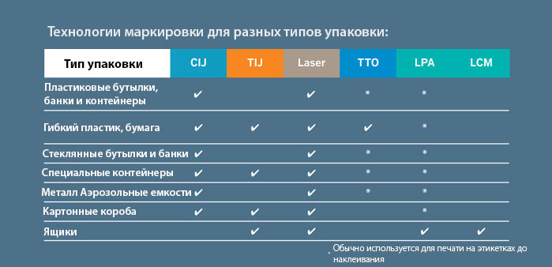

Подскажите, можно ли у вас быстро изготовить образцы? Если да, то сколько мне будет стоить около 8-12 качественно отмаркированных образцов?
— Добрый день, Максим Сергеевич!
В компании ООО "ДАТА-БАЙ" Вы можете сделать тестовые образцы маркировки на Вашей продукции совершенно бесплатно в необходимые Вам сроки. Специалисты компании изготовят требуемые Вам образцы с учетом типа маркируемого материала, скорости Вашей производственной линии, количества символов наносимой информации и других критериев.
В случае, если у Вас остались еще вопросы, вы можете задать их в данной теме или обратиться за квалифицированной помощью к специалистам компании по телефонам: +37517 388-22-01 или +37529 180-09-32.
Предлагаемые не оригинальные расходные материалы гораздо дешевле оригинальных. Почему вы настаиваете на использовании именно оригинальных чернил и растворителя?
— Каждый производитель, в первую очередь, заинтересован в своей репутации, лояльности потребителя а так же в качестве своих товаров. Чернила и растворитель оригинального производителя специально разработаны для его оборудования и протестированы, таким образом, производитель берет на себя гарантию бесперебойной работы оборудования.
Производители пиратских расходных материалов заинтересованы в одном - объемах продаж и краткосрочной прибыли. Они используют дешевые ингридиенты сомнительного качества, этим и объясняется такая низкая цена. Они не заинтересованы в бесперебойной работе вашего принтера или безопасности, при этом некоторые составляющие пиратских чернил и растворнителя могут быть опасны.
Так же посмотрите презентацию о рисках использования неоригинальных расходных материалов.
Здравствуйте, подскажите пожалуйста, какое оборудование является оптимальным для маркировки пластика?
— Здравствуйте! Обратите внимание на данную таблицу, в которой отображены технологии и их применение.

Таким образом, для маркировки пластика оптимально вам подойдут каплеструйные маркираторы, термотрансферные принтеры (для гибкого пластика) и лазерная маркировка (несмываемая).
Связаться с нами можно по телефону, почте, форму заявки или по он-лайн чату у нас на сайте.
Мы обязательно подскажем правильное решение для вашего бизнеса.